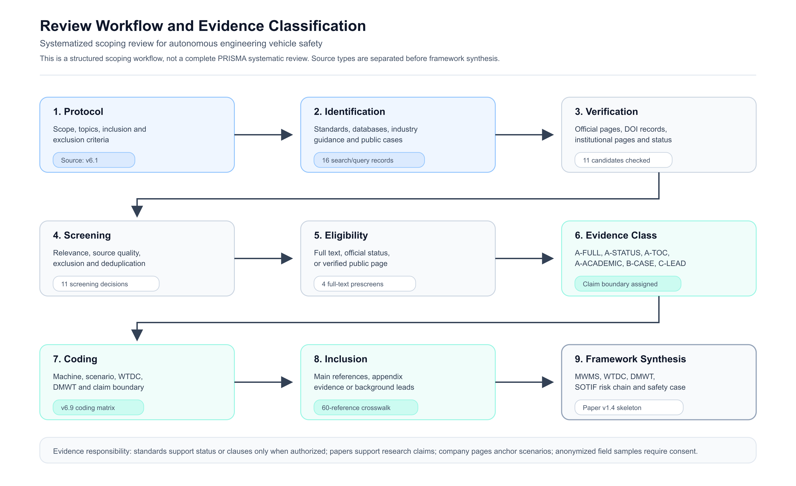

从安全行驶到安全作业
From Safe Driving to Safe Working
工程车辆不是只会移动的道路车辆。它们要在场地、物料、工具、人员、协同装备和远程监督共同作用下完成可审查的作业闭环。
Engineering vehicles are not road vehicles that only move. They must complete reviewable work loops under interacting site, material, attachment, human, cooperating-equipment and remote-supervision conditions.
系统边界扩大
Expanded Boundary
车辆、工作装置、工具、物料、场地基础设施、监督系统和现场组织共同成为安全对象。
Vehicle, work equipment, attachment, material, site infrastructure, supervision and organization become one assurance object.
任务后果扩大
Expanded Consequences
风险不仅是碰撞，还包括撒料、低满载率、车厢损伤、返工、停机、恢复困难和环境资源损失。
Risk is not only collision. It includes spillage, low fill rate, truck-bed damage, rework, downtime, difficult recovery and resource loss.
证据链扩大
Expanded Evidence
仿真、封闭场地、实车、运行日志、近失事件、接管和任务质量偏差都应进入 safety case。
Simulation, closed-site tests, field logs, near misses, takeover and task-quality deviation should all enter the safety case.
落地方向扩大
Expanded Impact
项目服务于综述论文、标准化建议、测试评价、会议材料和企业产品落地，不局限于发表本身。
The project supports manuscripts, standardization proposals, testing, talks and real products, not publication as the sole destination.
材料吸收形成的技术线索
Technical Strands Absorbed
本项目把工程机械自主作业、Move the Earth and Beyond、施工系统之系统、移动物理 AI 和标准化信号整理成公开可用的框架。内部材料只作为背景输入，公开结论以可核验来源为边界。
The project synthesizes autonomous construction machinery, Move the Earth and Beyond, construction systems of systems, mobile physical AI and standardization signals into a public framework. Internal material is background only; public claims stay within verifiable sources.
装载机自主作业闭环
Autonomous loader loop
料堆识别、铲掘点选择、铲斗轨迹、满载率测量、卸料对象识别、V 型路径规划和跟踪控制共同定义安全问题。
Stockpile perception, digging-point selection, bucket trajectory, fill-rate measurement, dumping-object recognition, V-shaped path planning and tracking define the safety problem.
半自动工地系统之系统
Semi-automated site SoS
自动设备、人工设备、调度系统、远程监督和现场人员之间的状态一致性、通信延迟和控制权切换必须被显式分析。
State consistency, communication delay and authority transfer among automatic equipment, manual equipment, dispatch, supervision and people must be explicit.
移动物理 AI 安全
Mobile physical AI safety
机器人 SOTIF、物理交互安全、VLA/大模型决策安全和运行时 Guardian 为工程车辆 AI 功能不足提供方法启发。
Robot SOTIF, physical interaction safety, VLA/LLM decision safety and runtime Guardians inform AI insufficiency handling for engineering vehicles.
星球资源作业外推
Planetary-resource extrapolation
月球和火星资源作业放大通信延迟、能源约束、地形未知、多机协同和恢复困难，可作为框架压力测试。
Lunar and Mars resource operations amplify communication delay, energy constraints, unknown terrain, multi-machine coordination and difficult recovery.
三个核心概念
Three Core Concepts
AEV Safety 用 MWMS、WTDC 和 DMWT 替代“把道路自动驾驶直接搬到工程机械”的简单说法。
AEV Safety uses MWMS, WTDC and DMWT instead of directly copying road-automation language into engineering machinery.
| Term | 中文全称 | Chinese | English | 作用 | Role |
|---|---|---|---|---|---|
| MWMS | 移动作业机器系统 | 移动作业机器系统 | Mobile Working Machine System | 把车辆、工作装置、工具、物料、现场、监督和组织作为一个安全论证对象。 | Treats vehicle, work equipment, attachment, material, site, supervision and organization as one assurance object. |
| WTDC | 作业场地与任务设计条件 | 作业场地与任务设计条件 | Worksite and Task Design Conditions | 扩展 ODD，声明地形、物料、工具、人员区、禁入区、通信、定位和监督条件。 | Extends ODD to terrain, material, attachment, human zone, exclusion zone, communication, localization and supervision. |
| DMWT | 动态移动与作业任务 | 动态移动与作业任务 | Dynamic Moving and Working Task | 扩展 DDT，覆盖移动、定位、铲掘、装载、卸料、压实、打桩、开沟、运输和恢复动作。 | Extends DDT to movement, localization, digging, loading, dumping, compacting, piling, trenching, hauling and recovery. |
五层参考架构
Five-Layer Reference Architecture
架构从场地与任务边界开始，到机器控制、任务自主、现场监督，最后进入 safety case 和标准证据。
The architecture starts from worksite and task boundaries, moves through machine control, task autonomy and site supervision, and ends in safety cases and standards evidence.
Safety Case 与标准证据
Safety Case and Standards Evidence
claims、arguments、evidence、assumptions、limitations，以及标准映射和证据等级。
Claims, arguments, evidence, assumptions, limitations, standard mapping and evidence classes.
现场监督与运行控制
Site Supervision and Operational Control
调度、围挡、警示、远程监督、远程驾驶、控制权切换、最小风险状态和恢复流程。
Dispatch, barriers, warnings, remote supervision, remote driving, authority transfer, minimal-risk state and recovery.
任务自主与运行时安全监控
Task Autonomy and Runtime Safety Monitoring
感知、规划、工具控制、任务质量监控、低置信度/OOD 检测和运行时安全守护。
Perception, planning, tool control, task-quality monitoring, low-confidence/OOD detection and runtime guardians.
机器安全与工作装置控制
Machine Safety and Work-Equipment Control
制动、转向、驱动、液压、急停、安全限位、软件和数据传输相关安全控制。
Braking, steering, drive, hydraulics, emergency stop, safety limits, software and data-transmission safety controls.
作业场地与任务边界
Worksite and Task Boundary
WTDC、DMWT、物料、地形、人员、资产、基础设施和不允许运行条件。
WTDC, DMWT, material, terrain, people, assets, infrastructure and prohibited operating conditions.
作业场地与任务分类
Worksite and Task Taxonomy
分类体系把工程车辆安全场景分为七类，用于场景库、测试矩阵、运行监控和事故/近失事件复盘。
The taxonomy divides engineering-vehicle safety scenarios into seven classes for scenario libraries, test matrices, operational monitoring and incident or near-miss review.
| Code | 类别 | Class | 典型问题 | Typical issue |
|---|---|---|---|---|
| A | 场地与基础设施 | Site and infrastructure | 场地边界、禁入区、坡度、通信、定位、能源和地图新鲜度。 | Site boundary, exclusion zone, slope, communication, localization, energy and map freshness. |
| B | 感知与语义理解 | Perception and semantics | 料堆、车厢、坑槽、边坡、人员、协同设备和障碍物识别不足。 | Insufficient recognition of stockpiles, truck beds, trenches, slopes, people, cooperating equipment and obstacles. |
| C | 移动与路径控制 | Movement and path control | V 型路径、倒车、铰接转向、路径跟踪、坡道和低附着稳定性。 | V-shaped paths, reversing, articulated steering, path tracking, ramps and low-adhesion stability. |
| D | 工作装置与物料交互 | Work equipment and material interaction | 铲掘、卸料、开沟、打桩、压实、破碎、清舱和任务质量。 | Digging, dumping, trenching, piling, compacting, crushing, hold cleaning and task quality. |
| E | 人员、资产与协同装备 | People, assets and cooperating equipment | 人员进入、旁观者、人工驾驶设备、卡车、输送带和固定基础设施。 | People entering, bystanders, manual equipment, trucks, conveyors and fixed infrastructure. |
| F | 监督、调度与恢复 | Supervision, dispatch and recovery | 远程监督负荷、控制权转移、通信中断、故障恢复和最小风险状态。 | Remote-supervision workload, authority transfer, communication loss, fault recovery and minimal-risk state. |
| G | 极端与星球资源作业 | Extreme and planetary-resource work | 低能源、长延迟、未知地形、未知物料和多机资源作业。 | Low energy, long delay, unknown terrain, unknown material and multi-machine resource operations. |
评价矩阵
Evaluation Matrix
AEV Safety 把后果分为六类，避免把工程车辆安全窄化为“是否撞人”。阈值必须由机器、场地、任务、授权标准和试验数据共同校准。
AEV Safety divides consequences into six classes to avoid reducing engineering-vehicle safety to collision with people. Thresholds must be calibrated by machine, site, task, authorized standards and test data.
人员安全
Human Safety
最近距离、侵入次数、急停、漏检和警示响应。
Minimum distance, intrusions, emergency stops, missed detection and warning response.
资产与基础设施
Assets and Infrastructure
车辆、工具、车厢、料斗、输送带和固定设施损伤。
Damage to vehicles, tools, truck beds, hoppers, conveyors and fixed infrastructure.
生产连续性
Production Continuity
任务中断、恢复时间、人工介入、节拍波动和停机。
Task interruption, recovery time, human intervention, rhythm fluctuation and downtime.
任务质量
Task Quality
满载率、卸料偏差、开沟深度、桩位、压实度和平整度。
Fill rate, dumping deviation, trench depth, pile position, compaction and surface quality.
环境与资源
Environment and Resources
能耗、撒漏、粉尘、材料浪费、能源补给和极端环境资源约束。
Energy use, spillage, dust, material waste, energy supply and extreme-environment resource constraints.
恢复能力
Recoverability
最小风险状态、恢复路径、监督响应、现场处置和复测结果。
Minimal-risk state, recovery path, supervision response, site handling and retest result.
标准版图
Standards Landscape
本项目不宣称工程车辆没有标准。真正的缺口是：已有标准和指南尚未形成连接 MWMS、WTDC、DMWT、功能不足、触发条件、作业后果、运行监控和 safety case 的统一证据链。
The project does not claim that engineering vehicles have no standards. The precise gap is that existing standards and guidance have not formed a unified evidence chain linking MWMS, WTDC, DMWT, insufficiency, triggering condition, task consequence, operational monitoring and safety case.
道路车辆方法供体
Road-vehicle method donors
ISO 26262、ISO 21448、ISO 34502、ISO/PAS 8800 和 ISO/SAE 21434 贡献系统边界、功能不足、场景测试、AI 安全和网络安全方法。
ISO 26262, ISO 21448, ISO 34502, ISO/PAS 8800 and ISO/SAE 21434 contribute system boundary, functional insufficiency, scenario testing, AI safety and cybersecurity methods.
工程机械与矿山底座
Machinery and mining base
ISO 17757、ISO 19014、ISO 15817、ISO 21815 和 GMG 指南支撑自主机器系统、控制系统安全、远程控制、碰撞风险和运营准备。
ISO 17757, ISO 19014, ISO 15817, ISO 21815 and GMG guidance support autonomous machine systems, control-system safety, remote control, proximity risk and operational readiness.
相邻标准化信号
Adjacent standardization signals
ISO 18497-1:2024、机器人 SOTIF 国家标准项目、ISO 10218、ISO/TS 15066 和 AI 风险治理框架提供非道路移动作业与移动物理 AI 的相邻线索。
ISO 18497-1:2024, the Chinese robot SOTIF project, ISO 10218, ISO/TS 15066 and AI risk-governance frameworks provide adjacent signals for non-road mobile work and mobile physical AI.

论文初稿与图件
Manuscript and Figure
中文稿和英文稿均已嵌入综述工作流图。图件同时保留 PNG、SVG 和 PDF 版本，便于网页展示、论文排版和后续修改。
Both Chinese and English drafts embed the review workflow figure. The figure is kept as PNG, SVG and PDF for web display, manuscript layout and future edits.
- 作者列为 Zhang Yuxin、Li Xuefei、Yao Zongwei；作者顺序、单位、通信作者、ORCID、基金、利益冲突和贡献声明待正式投稿前确认。
- Authors are listed as Zhang Yuxin, Li Xuefei and Yao Zongwei. Author order, affiliations, corresponding author, ORCID, funding, competing-interest statement and contribution statement will be finalized before formal submission.
- Supplementary Material 中的两个表格已整合进入英文稿正文。
- The two former supplementary tables have been integrated into the English manuscript body.
公开文档库
Public Document Library
仓库采用中英文双版本。下表列出当前最重要的公开入口；过程文件和内部参考材料不进入公开阅读路径。
The repository uses paired Chinese and English documents. The table lists the key public entry points. Process files and internal reference material are not part of the public reading path.
| 模块 | Module | 中文 | Chinese | English | 用途 | Use |
|---|---|---|---|---|---|---|
| 材料吸收 | Source synthesis | source-synthesis.md | source-synthesis.md | source-synthesis-en.md | 说明哪些材料被吸收，以及公开证据边界。 | Explains absorbed material and public evidence boundaries. |
| 文献综述 | Literature review | literature-review.md | literature-review.md | literature-review-en.md | 组织道路车辆、工程机械、施工系统和移动物理 AI 的研究脉络。 | Organizes road-vehicle, machinery, construction-system and mobile physical AI research strands. |
| 场景分类 | Taxonomy | taxonomy-v1.0.md | taxonomy-v1.0.md | taxonomy-v1.0-en.md | 定义 WTDC/DMWT 场景库的顶层结构。 | Defines the top-level WTDC/DMWT scenario structure. |
| 参考架构 | Architecture | reference-architecture.md | reference-architecture.md | reference-architecture-en.md | 描述五层安全保证对象和证据流。 | Describes the five-layer assurance object and evidence flows. |
| 评价矩阵 | Evaluation | evaluation-matrix.md | evaluation-matrix.md | evaluation-matrix-en.md | 定义六类后果和测试记录字段。 | Defines six consequence classes and test-record fields. |
| 标准化 | Standardization | standardization-roadmap.md | standardization-roadmap.md | standardization-roadmap-en.md | 给出候选标准模块和分阶段推进路线。 | Provides candidate standard modules and a phased roadmap. |
| 论文初稿 | Manuscript | manuscript-zh.md | manuscript-zh.md | manuscript-en.md | 中英文论文和综述论文初稿入口。 | Entry point for Chinese and English manuscript drafts. |